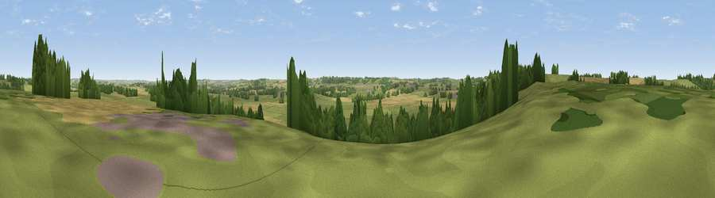

Viewpoint near Gumley
#31134 in England · top 41% of its area beats it · near Gumley · access?Where it is
The exact computed spot (SP 67725 88275). Click the marker for map links.
Public access: no public right of way or access land is recorded at this exact spot — it may be on private land. Computed from Natural England's CRoW access layer and OpenStreetMap rights of way — not the legal definitive map. Always verify locally.
The view, rendered

A 360° render of this exact spot computed from the terrain model, tree cover and land cover — summer colours, afternoon light, calibrated against photographs of famous viewpoints. Real trees, hedges and buildings will differ in detail.
The panorama
Grey silhouette: terrain skyline in each direction (720 bearings, Earth curvature and refraction included). Dashed green: skyline with trees (+15 m) and buildings (+8 m) as obstacles. Blue strip: how far the ground is visible on each bearing.
Where the view opens
Wedge length = distance to the farthest visible ground on that bearing (vegetation-aware). Rings at 10, 25 and 50 km.
What fills the view
53% grassland · 36% cropland · 10% woodland ·
Angular shares of the visible panorama (visual magnitude), not map area. Landscape diversity 0.42 (0–1 Shannon).
Key numbers
More beautiful places nearby
The staircase of upgrades: each row has a higher view potential than everything closer. Driving times are estimates from straight-line distance, calibrated against real road routing — check an actual route before setting out.
| Place | Direction | Drive | Score |
|---|---|---|---|
| Smeeton Hill | N · 3 km | ~7 min | 39.5 |
| Viewpoint near East Farndon | SE · 4 km | ~10 min | 40.4 |
| Burnmill Hill | E · 5 km | ~11 min | 43.6 |
| Viewpoint near Sibbertoft | SSE · 5 km | ~12 min | 48.3 |
| Viewpoint near Sibbertoft | SSE · 6 km | ~12 min | 48.8 |
| Viewpoint near Cold Ashby | SSW · 12 km | ~23 min | 61.7 |
| Viewpoint near Burrough on the Hill | NNE · 25 km | ~41 min | 66.0 |
| Old John | NNW · 27 km | ~44 min | 70.3 |
52.48820, -1.00404 · source: screening · position refined by local search. Computed location — check access rights before visiting.